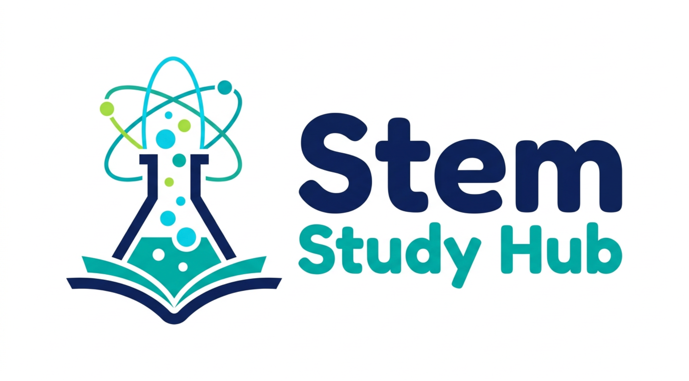

National 5
Explore National 5 Physics questions from 2022 - 2026.
National 5 Question Explorer
Choose your course level to explore past-paper questions by year and topic, open the original papers and marking instructions, and ask an AI tutor for one hint at a time.
Explore National 5 Physics questions from 2022 - 2026.
National 5 Question ExplorerExplore Higher Physics questions from 2022 - 2026.
Higher Question ExplorerExplore Advanced Higher Physics questions from 2022 - 2026.
Advanced Higher Question Explorer